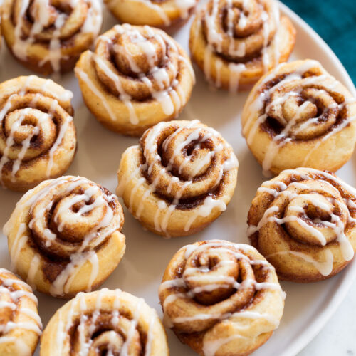

Cinnamon Buns
Description
Get ready to be enveloped in the comforting aroma of freshly baked cinnamon buns,
a sweet treat that's perfect for breakfast or anytime you crave a delightful indulgence.
These cinnamon buns are pillowy soft, swirled with a luscious cinnamon-sugar filling,
and topped with a heavenly cream cheese glaze. Follow along as we dive into the
mouthwatering journey of making these irresistible cinnamon buns.
Ingredients
Dough
- 4 cups all-purpose flour
- ¼ cup granulated sugar
- 1 teaspoon salt
- 2 ¼ teaspoons instant yeast
- ¾ cup warm milk
- ¼ cup unsalted butter, melted
- 2 large eggs
Filling
- ½ cup unsalted butter, softened
- 1 cup packed brown sugar
- 2 tablespoons ground cinnamon
Cream Cheese Glaze
- 4 ounces cream cheese, softened
- ¼ cup unsalted butter, softened
- 1 cup powdered sugar
- 1 teaspoon vanilla extract
Steps
- In a large mixing bowl, combine the flour, granulated sugar, salt, and instant yeast. Mix well to ensure even distribution of the ingredients.
- In a separate bowl, whisk together the warm milk, melted butter, and eggs until well combined.
- Pour the wet ingredients into the dry ingredients and mix using a wooden spoon or a stand mixer with a dough hook attachment.
- Knead the dough for about 5-7 minutes until it becomes smooth, elastic, and slightly sticky.
- Shape the dough into a ball and place it in a greased bowl. Cover the bowl with a clean kitchen towel and let the dough rise in a warm place for about 1-2 hours, or until it doubles in size.
- While the dough is rising, prepare the filling. In a small bowl, combine the softened butter, brown sugar, and ground cinnamon. Mix until it forms a smooth, spreadable mixture.
- Once the dough has doubled in size, punch it down to release any air bubbles. Transfer it to a floured surface and roll it out into a large rectangle, about ¼ inch thick.
- Spread the cinnamon-sugar filling evenly over the rolled-out dough, leaving a small border around the edges.
- Starting from one of the long sides, tightly roll the dough into a log shape. Pinch the seam to seal.
- Using a sharp knife or a piece of dental floss, cut the log into equal-sized slices, about 1 ½ inches thick.
- Place the cinnamon bun slices in a greased baking dish, leaving some space between each bun for expansion.
- Cover the baking dish with a clean kitchen towel and let the buns rise for an additional 30-45 minutes until they have puffed up.
- Preheat your oven to 350°F (175°C) and bake the cinnamon buns for 25-30 minutes, or until they turn golden brown and are cooked through.
- While the buns are baking, prepare the cream cheese glaze. In a bowl, beat the softened cream cheese and butter together until smooth. Gradually add in the powdered sugar and vanilla extract, and continue to beat until the glaze is creamy and well combined.
- Once the cinnamon buns are baked, remove them from the oven and let them cool for a few minutes.
- Drizzle the cream cheese glaze generously over the warm cinnamon buns, allowing it to melt and seep into the crevices.
- Serve the cinnamon buns and enjoy!